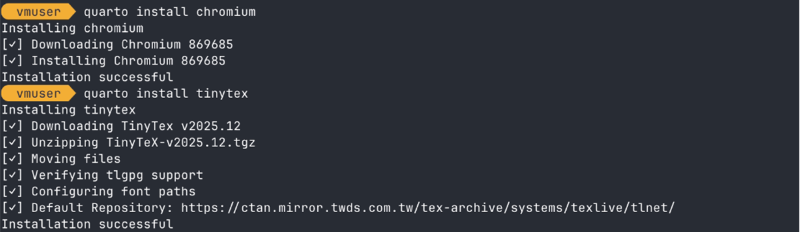
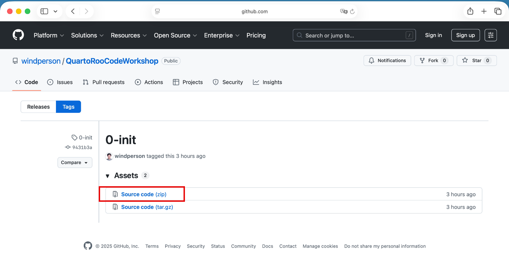

安裝工具 (macOS)
需要安裝的軟體有：
- git
- XCode Command Line Tools（假如系統未安裝 XCode）
- Quarto CLI
- Google Chrome 瀏覽器（假如只有macOS內建 safari）
- Visual Studio Code
並安裝以下擴充套件 (Extensions)：
以下為 Optional 軟體，假如 .qmd 文件中有使用到 R-markdown 語法或 Python Jupyter Notebook 才須安裝：
建議使用 Homebrew 套件管理工具來安裝上述軟體。
Homebrew 是 macOS 上非常流行的套件管理工具，可以方便地安裝、更新和管理各種軟體包。安裝和使用教學可以參考這篇：https://ithelp.ithome.com.tw/articles/10231649
安裝 git
Homebrew 提供了 git 的安裝方式：https://formulae.brew.sh/formula/git
開啟終端機 (Terminal) 應用程式
輸入以下指令來安裝 ：
brew install git安裝完成後，輸入以下指令以便設定 git 的使用者名稱：
git config --global user.name "你的名字"以及設定電子郵件地址：
git config --global user.email "你的電子郵件地址"
然後可以用 git config --list 指令來確認設定是否正確。
安裝 XCode Command Line Tools
（假如系統未安裝XCode）
開啟終端機 (Terminal) 應用程式
輸入以下指令來安裝 ：
xcode-select --install會跳出一個視窗，點選「安裝」(Install) 按鈕，並同意授權條款 (Agree to the Terms of Service) 即可開始安裝。
安裝 Quarto CLI
Homebrew 提供了 Quarto 的安裝方式：https://formulae.brew.sh/cask/quarto
開啟終端機 (Terminal) 應用程式
輸入以下指令來安裝 ：
brew install --cask quarto安裝中會提示你輸入sudo密碼，請輸入你的 macOS 使用者密碼以繼續安裝。

假如在文件中有使用到 mermaid 語法或需要輸出 PDF 文件，請在安裝完 Quarto 後，打開終端機 (Terminal) 並輸入下列兩個指令來安裝 Quarto 的衍生套件：
quarto install chromium
quarto install TinyTex
chromium 是 Quarto 的 mermaid 語法預覽圖需要，而 TinyTex 則是用來編譯 PDF 文件所需的 LaTeX 發行版。
安裝 Google Chrome 瀏覽器
（假如只有macOS內建safari）
Homebrew 提供了 Google Chrome 的安裝方式：https://formulae.brew.sh/cask/google-chrome
開啟終端機 (Terminal) 應用程式
輸入以下指令來安裝 ：
brew install --cask google-chrome
安裝 Visual Studio Code
Homebrew 提供了 Visual Studio Code 的安裝方式：https://formulae.brew.sh/cask/visual-studio-code
開啟終端機 (Terminal) 應用程式
輸入以下指令來安裝 ：
brew install --cask visual-studio-code
安裝完畢後，可設定原本 Visual Studio Code 內建的 GitHub Copilot chat 介面不要每次都跑出來：
- 開啟 Visual Studio Code 應用程式
- 選擇 Settings :

- 在搜尋欄輸入
workbench.secondarySideBar.defaultVisibility，然後出現的設定下拉選單，選擇 hidden ：
安裝 Visual Studio Code 擴充套件
最快的方法是下載這個 GitHub Respository 的 0-init Release 壓縮檔:
https://github.com/windperson/QuartoRooCodeWorkshop/releases/tag/0-init

解壓縮後，在 Visual Studio Code 中開啟解壓縮後的資料夾:

然後右下角會跳出提示，詢問是否要安裝推薦的擴充套件:

可以按下 Install 直接安裝，或按 Show Recommendations 然後 Visual Studio Code 自動列出上述要安裝的擴充套件在最上面。

Optional: 安裝 R-markdown
假如文件中有使用到 R-markdwon 語法，請安裝 R 和 R-markdown：
安裝 R 語言：使用 Homebrew 安裝 R 語言：https://formulae.brew.sh/formula/r
brew install r安裝 R-markdown 套件：
Rscript -e "install.packages('rmarkdown', repos = 'https://cloud.r-project.org')"
Optional: 安裝 Jupyter Notebook
假如文件中有使用到 Python Jupyter Notebook，安裝 Jupyter Notebook 的指令為：
python3 -m pip install --upgrade pip; python3 -m pip install Jupyter驗證安裝是否成功
在終端機 (Terminal) 輸入 quarto check 指令來驗證安裝是否成功：